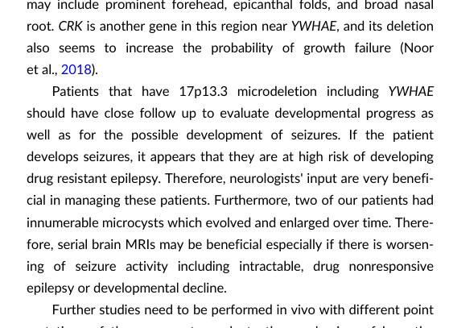

Miller-Dieker lissencephaly syndrome (MDLS) is a severe contiguous-gene deletion syndrome caused by a heterozygous deletion of the 17p13.3 critical region, which includes PAFAH1B1 (LIS1) and YWHAE (14-3-3 epsilon). Haploinsufficiency of PAFAH1B1 disrupts the LIS1/dynein/microtubule motor machinery required for neuronal migration during corticogenesis, producing classical (type I) lissencephaly with a thickened, poorly gyrated cortex. Co-deletion of YWHAE contributes to the greater severity that distinguishes MDLS from isolated lissencephaly sequence. Affected individuals have profound developmental disability, intractable epilepsy, microcephaly, hypotonia, characteristic craniofacial dysmorphism, growth failure, and high early mortality.
Ask a research question about Miller-Dieker Lissencephaly Syndrome. OpenScientist will conduct autonomous deep research using the Disorder Mechanisms Knowledge Base and PubMed literature (typically 10-30 minutes).
Do not include personal health information in your question. Questions and results are cached in your browser's local storage.
name: Miller-Dieker Lissencephaly Syndrome
creation_date: "2026-06-03T00:00:00Z"
synonyms:
- Miller-Dieker syndrome
- MDLS
- MDS
- Lissencephaly due to 17p13.3 deletion
- Monosomy 17p13.3
description: >-
Miller-Dieker lissencephaly syndrome (MDLS) is a severe contiguous-gene
deletion syndrome caused by a heterozygous deletion of the 17p13.3 critical
region, which includes PAFAH1B1 (LIS1) and YWHAE (14-3-3 epsilon).
Haploinsufficiency of PAFAH1B1 disrupts the LIS1/dynein/microtubule motor
machinery required for neuronal migration during corticogenesis, producing
classical (type I) lissencephaly with a thickened, poorly gyrated cortex.
Co-deletion of YWHAE contributes to the greater severity that distinguishes
MDLS from isolated lissencephaly sequence. Affected individuals have profound
developmental disability, intractable epilepsy, microcephaly, hypotonia,
characteristic craniofacial dysmorphism, growth failure, and high early
mortality.
category: Mendelian
parents:
- chromosomal deletion syndrome
- classic lissencephaly
- neuronal migration disorder
disease_term:
preferred_term: Miller-Dieker lissencephaly syndrome
term:
id: MONDO:0009532
label: Miller-Dieker lissencephaly syndrome
references:
- reference: PMID:20301752
title: "PAFAH1B1-Related Lissencephaly / Subcortical Band Heterotopia."
tags:
- GeneReviews
inheritance:
- name: De novo 17p13.3 deletion
description: >-
MDLS most commonly arises from a de novo 17p13.3 deletion; a minority of
cases result from an unbalanced segregation of a parental balanced
chromosomal rearrangement, which has implications for recurrence-risk
counseling.
evidence:
- reference: PMID:24055730
reference_title: "Chromosome 17p13.3 deletion syndrome: aCGH characterization, prenatal findings and diagnosis, and literature review."
supports: SUPPORT
evidence_source: HUMAN_CLINICAL
snippet: >-
The qPCR assays revealed a maternal origin of the deletion.
explanation: >-
This case illustrates that some 17p13.3 deletions derive from a parental
rearrangement, supporting the need for parental cytogenetic studies in
recurrence-risk assessment.
pathophysiology:
- name: 17p13.3 Contiguous-Gene Deletion
description: >-
The primary lesion in MDLS is a heterozygous deletion of the 17p13.3
critical region, a contiguous-gene deletion that removes PAFAH1B1 (LIS1)
and YWHAE (14-3-3 epsilon) along with neighboring dosage-sensitive genes.
The size and gene content of the deletion determine phenotype severity,
with larger deletions including YWHAE producing the classical Miller-Dieker
phenotype.
genes:
- preferred_term: PAFAH1B1
term:
id: hgnc:8574
label: PAFAH1B1
- preferred_term: YWHAE
term:
id: hgnc:12851
label: YWHAE
evidence:
- reference: PMID:40806509
reference_title: "Understanding the Molecular Basis of Miller-Dieker Syndrome."
supports: SUPPORT
evidence_source: HUMAN_CLINICAL
snippet: >-
Miller-Dieker Syndrome (MDS) is a rare neurodevelopmental disorder caused
by a heterozygous deletion of approximately 26 genes within the MDS locus
of human chromosome 17.
explanation: >-
Establishes the underlying lesion as a heterozygous contiguous-gene
deletion within the 17p13.3 MDS locus.
- reference: PMID:29628935
reference_title: "Neurodevelopmental Genetic Diseases Associated With Microdeletions and Microduplications of Chromosome 17p13.3."
supports: SUPPORT
evidence_source: HUMAN_CLINICAL
snippet: >-
Chromosome microdeletions within 17p13.3 can result in either isolated
lissencephaly sequence (ILS) or Miller-Dieker syndrome (MDS). ... patients
with MDS have larger deletions than patients with ILS, resulting in
additional symptoms such as poor muscle tone, congenital anomalies,
abnormal spasticity, and craniofacial dysmorphisms.
explanation: >-
Identifies MDS as a 17p13.3 microdeletion disorder and frames it within
the broader microdeletion spectrum whose severity depends on the deleted
gene content, with the larger MDS deletions producing additional features
beyond isolated lissencephaly.
downstream:
- target: LIS1 Haploinsufficiency and Dynein/Microtubule Motor Dysfunction
causal_link_type: DIRECT
- target: YWHAE Contribution to Severity
causal_link_type: DIRECT
- name: LIS1 Haploinsufficiency and Dynein/Microtubule Motor Dysfunction
description: >-
Loss of one PAFAH1B1 (LIS1) allele reduces LIS1 protein dosage. LIS1
regulates the cytoplasmic dynein motor and microtubule dynamics that drive
nucleokinesis (nuclear translocation) of migrating neurons. LIS1
haploinsufficiency also reduces filamentous actin at the leading edge of
migrating neurons through dysregulated Rho GTPase activity, impairing
motility. Structural studies place type-1 lissencephaly mutations directly
within the dynein-LIS1 interface.
cell_types:
- preferred_term: forebrain radial glial cell
term:
id: CL:0013000
label: forebrain radial glial cell
- preferred_term: migrating cortical glutamatergic neuron
term:
id: CL:0000679
label: glutamatergic neuron
biological_processes:
- preferred_term: neuron migration
term:
id: GO:0001764
label: neuron migration
modifier: DECREASED
- preferred_term: microtubule-based movement (dynein motor)
term:
id: GO:0007018
label: microtubule-based movement
modifier: ABNORMAL
evidence:
- reference: PMID:36433683
reference_title: "Further expansion and confirmation of phenotype in rare loss of YWHAE gene distinct from Miller-Dieker syndrome."
supports: SUPPORT
evidence_source: HUMAN_CLINICAL
snippet: >-
Haploinsufficiency of PAFAH1B1 is responsible for the characteristic
lissencephaly in MDS.
explanation: >-
Directly attributes the characteristic lissencephaly to PAFAH1B1 (LIS1)
haploinsufficiency.
- reference: PMID:14507966
reference_title: "Disregulated RhoGTPases and actin cytoskeleton contribute to the migration defect in Lis1-deficient neurons."
supports: SUPPORT
evidence_source: MODEL_ORGANISM
snippet: >-
Lis1 haploinsufficiency is shown here to also result in reduced
filamentous actin at the leading edge of migrating neurons, associated
with upregulation of RhoA and downregulation of Rac1 and Cdc42 activity.
explanation: >-
Mouse data link Lis1 haploinsufficiency to a cytoskeletal migration
defect via dysregulated Rho GTPase signaling.
downstream:
- target: Impaired Neuronal Migration and Cortical Malformation
causal_link_type: DIRECT
- target: mTOR Pathway Hypoactivity
causal_link_type: UNKNOWN
- name: YWHAE Contribution to Severity
description: >-
Co-deletion of YWHAE (encoding 14-3-3 epsilon) augments the neuronal
migration defect. 14-3-3 epsilon binds CDK5/p35-phosphorylated NDEL1
(NUDEL) and sustains its phosphorylation; its loss mislocalizes NDEL1 and
LIS1, reducing cytoplasmic dynein function. Mice doubly deficient for Ywhae
and Pafah1b1 have more severe migration defects than single heterozygotes,
providing a molecular explanation for why YWHAE-including deletions cause
the more severe Miller-Dieker phenotype.
cell_types:
- preferred_term: migrating cortical glutamatergic neuron
term:
id: CL:0000679
label: glutamatergic neuron
biological_processes:
- preferred_term: neuron migration
term:
id: GO:0001764
label: neuron migration
modifier: DECREASED
evidence:
- reference: PMID:12796778
reference_title: "14-3-3epsilon is important for neuronal migration by binding to NUDEL: a molecular explanation for Miller-Dieker syndrome."
supports: SUPPORT
evidence_source: MODEL_ORGANISM
snippet: >-
Mice heterozygous with respect to both genes have more severe migration
defects than single heterozygotes.
explanation: >-
Demonstrates that combined Ywhae and Pafah1b1 deficiency produces a more
severe migration defect, explaining the greater severity of MDLS versus
isolated lissencephaly.
- reference: PMID:12796778
reference_title: "14-3-3epsilon is important for neuronal migration by binding to NUDEL: a molecular explanation for Miller-Dieker syndrome."
supports: SUPPORT
evidence_source: MODEL_ORGANISM
snippet: >-
Similar to LIS1, deficiency of 14-3-3epsilon results in mislocalization
of NUDEL and LIS1, consistent with reduction of cytoplasmic dynein
function.
explanation: >-
Provides the molecular mechanism by which 14-3-3 epsilon loss converges on
reduced dynein function in the LIS1/NDEL1 pathway.
downstream:
- target: Impaired Neuronal Migration and Cortical Malformation
causal_link_type: DIRECT
- name: Impaired Neuronal Migration and Cortical Malformation
description: >-
Disrupted nucleokinesis arrests migrating neurons before they reach their
correct cortical layers during fetal corticogenesis. The result is a
thickened, abnormally layered cortex with a smooth surface (agyria/
pachygyria), the defining classical (type I) lissencephaly of MDLS.
cell_types:
- preferred_term: migrating cortical glutamatergic neuron
term:
id: CL:0000679
label: glutamatergic neuron
biological_processes:
- preferred_term: cerebral cortex radially oriented cell migration
term:
id: GO:0021799
label: cerebral cortex radially oriented cell migration
modifier: DECREASED
evidence:
- reference: PMID:40806509
reference_title: "Understanding the Molecular Basis of Miller-Dieker Syndrome."
supports: SUPPORT
evidence_source: HUMAN_CLINICAL
snippet: >-
One hallmark feature of MDS is an unusually smooth brain surface due to
abnormal neuronal migration during early brain development.
explanation: >-
Connects the abnormal neuronal migration to the hallmark smooth cortical
surface (lissencephaly).
- name: mTOR Pathway Hypoactivity
description: >-
Cerebral organoids derived from individuals with the MDLS 17p13.3
microdeletion recapitulate the thickened lissencephalic cortex and show
dysregulation of protein translation, metabolism, and the mTOR pathway.
mTOR hypoactivity acts as a convergent molecular mechanism that contributes
to the lissencephalic cortical phenotype rather than arising as a downstream
consequence of it: a brain-selective mTORC1 activator prevented and reversed
the cellular and molecular defects in these organoids, identifying mTOR
hypoactivity as a causal, potentially targetable mechanism. This is a
research-stage mechanism.
biological_processes:
- preferred_term: TOR signaling
term:
id: GO:0031929
label: TOR signaling
modifier: DECREASED
evidence:
- reference: PMID:39743596
reference_title: "Dysregulation of mTOR signalling is a converging mechanism in lissencephaly."
supports: SUPPORT
evidence_source: IN_VITRO
snippet: >-
PIDD1-mutant organoids and MDLS organoids recapitulated the thickened
cortex typical of human lissencephaly and demonstrated dysregulation of
protein translation, metabolism and the mTOR pathway.
explanation: >-
Patient-derived MDLS organoids show mTOR pathway dysregulation alongside
the recapitulated lissencephalic cortex.
- reference: PMID:39743596
reference_title: "Dysregulation of mTOR signalling is a converging mechanism in lissencephaly."
supports: SUPPORT
evidence_source: IN_VITRO
snippet: >-
A brain-selective activator of mTOR complex 1 prevented and reversed
cellular and molecular defects in the lissencephaly organoids.
explanation: >-
Supports mTOR hypoactivity as a causal, reversible contributor to the
cellular phenotype in MDLS organoids.
downstream:
- target: Impaired Neuronal Migration and Cortical Malformation
causal_link_type: UNKNOWN
phenotypes:
- name: Lissencephaly
description: >-
Classical (type I) lissencephaly with agyria/pachygyria and an abnormally
thick, smooth cortex.
phenotype_term:
preferred_term: Lissencephaly
term:
id: HP:0001339
label: Lissencephaly
evidence:
- reference: PMID:36433683
reference_title: "Further expansion and confirmation of phenotype in rare loss of YWHAE gene distinct from Miller-Dieker syndrome."
supports: SUPPORT
evidence_source: HUMAN_CLINICAL
snippet: >-
The most severe phenotype is Miller-Dieker syndrome (MDS) which is
characterized by lissencephaly, dysmorphic facial features, growth
failure, developmental disability, and often early death.
explanation: >-
Identifies lissencephaly as a core defining feature of MDLS.
- name: Seizures
description: >-
Epilepsy is highly frequent, often with onset in infancy and frequently
including infantile spasms; seizures are often drug resistant.
phenotype_term:
preferred_term: Seizure
term:
id: HP:0001250
label: Seizure
frequency: VERY_FREQUENT
evidence:
- reference: PMID:20301752
reference_title: "PAFAH1B1-Related Lissencephaly / Subcortical Band Heterotopia."
supports: SUPPORT
evidence_source: HUMAN_CLINICAL
snippet: >-
Seizures occur in more than 90% of individuals with lissencephaly and
often include infantile spasms.
explanation: >-
GeneReviews documents seizures in >90% of individuals with lissencephaly,
supporting a VERY_FREQUENT classification.
- name: Infantile spasms
description: >-
A characteristic early seizure type in PAFAH1B1-related lissencephaly.
phenotype_term:
preferred_term: Infantile spasms
term:
id: HP:0012469
label: Infantile spasms
evidence:
- reference: PMID:20301752
reference_title: "PAFAH1B1-Related Lissencephaly / Subcortical Band Heterotopia."
supports: SUPPORT
evidence_source: HUMAN_CLINICAL
snippet: >-
Seizures occur in more than 90% of individuals with lissencephaly and
often include infantile spasms.
explanation: >-
GeneReviews lists infantile spasms among the common seizure types.
- name: Profound intellectual disability
description: >-
Even with good seizure control, the best developmental level achieved is
typically equivalent to age three to five months.
phenotype_term:
preferred_term: Profound intellectual disability
term:
id: HP:0002187
label: Profound intellectual disability
evidence:
- reference: PMID:20301752
reference_title: "PAFAH1B1-Related Lissencephaly / Subcortical Band Heterotopia."
supports: SUPPORT
evidence_source: HUMAN_CLINICAL
snippet: >-
even with good seizure control, the best developmental level achieved
(excluding the few individuals with partial lissencephaly) is the
equivalent of about age three to five months.
explanation: >-
Supports a profound degree of developmental/intellectual impairment.
- name: Microcephaly
description: >-
Progressive microcephaly is a documented feature of PAFAH1B1-related
lissencephaly/SBH.
phenotype_term:
preferred_term: Microcephaly
term:
id: HP:0000252
label: Microcephaly
clinical_course: PROGRESSIVE
evidence:
- reference: PMID:20301752
reference_title: "PAFAH1B1-Related Lissencephaly / Subcortical Band Heterotopia."
supports: SUPPORT
evidence_source: HUMAN_CLINICAL
snippet: >-
Other findings in PAFAH1B1-related lissencephaly/SBH include feeding
issues and aspiration (which may result in need for gastrostomy tube
placement), progressive microcephaly, and occasional developmental
regression.
explanation: >-
GeneReviews documents progressive microcephaly as a feature.
- name: Hypotonia
description: >-
Affected newborns typically have mild-to-moderate hypotonia; axial
hypotonia is common and may coexist with distal spasticity.
phenotype_term:
preferred_term: Hypotonia
term:
id: HP:0001252
label: Hypotonia
evidence:
- reference: PMID:20301752
reference_title: "PAFAH1B1-Related Lissencephaly / Subcortical Band Heterotopia."
supports: SUPPORT
evidence_source: HUMAN_CLINICAL
snippet: >-
Affected newborns typically have mild-to-moderate hypotonia, feeding
difficulties, and poor head control.
explanation: >-
GeneReviews documents neonatal hypotonia.
- name: Spasticity
description: >-
Mild distal spasticity early in life can transition over time to more
severe spasticity.
phenotype_term:
preferred_term: Spasticity
term:
id: HP:0001257
label: Spasticity
clinical_course: PROGRESSIVE
evidence:
- reference: PMID:20301752
reference_title: "PAFAH1B1-Related Lissencephaly / Subcortical Band Heterotopia."
supports: SUPPORT
evidence_source: HUMAN_CLINICAL
snippet: >-
mild distal spasticity that can transition over time to more severe
spasticity.
explanation: >-
GeneReviews documents progressive spasticity.
- name: Feeding difficulties
description: >-
Feeding difficulties and aspiration are common and may necessitate
gastrostomy tube placement.
phenotype_term:
preferred_term: Feeding difficulties
term:
id: HP:0011968
label: Feeding difficulties
evidence:
- reference: PMID:20301752
reference_title: "PAFAH1B1-Related Lissencephaly / Subcortical Band Heterotopia."
supports: SUPPORT
evidence_source: HUMAN_CLINICAL
snippet: >-
Affected newborns typically have mild-to-moderate hypotonia, feeding
difficulties, and poor head control.
explanation: >-
GeneReviews documents feeding difficulties from the neonatal period.
- name: Growth failure
description: >-
Growth failure is a recognized feature of the severe Miller-Dieker
phenotype.
phenotype_term:
preferred_term: Growth delay
term:
id: HP:0001510
label: Growth delay
evidence:
- reference: PMID:36433683
reference_title: "Further expansion and confirmation of phenotype in rare loss of YWHAE gene distinct from Miller-Dieker syndrome."
supports: SUPPORT
evidence_source: HUMAN_CLINICAL
snippet: >-
The most severe phenotype is Miller-Dieker syndrome (MDS) which is
characterized by lissencephaly, dysmorphic facial features, growth
failure, developmental disability, and often early death.
explanation: >-
Lists growth failure among the defining features of MDLS.
- name: Facial dysmorphism
description: >-
Characteristic craniofacial dysmorphism is a defining feature of
Miller-Dieker syndrome, classically including a prominent forehead,
midface hypoplasia, small upturned nose, and thick upper lip (per the
MONDO definition, NCIT:C124852).
phenotype_term:
preferred_term: Dysmorphic facial features
term:
id: HP:0001999
label: Abnormal facial shape
evidence:
- reference: PMID:36433683
reference_title: "Further expansion and confirmation of phenotype in rare loss of YWHAE gene distinct from Miller-Dieker syndrome."
supports: SUPPORT
evidence_source: HUMAN_CLINICAL
snippet: >-
The most severe phenotype is Miller-Dieker syndrome (MDS) which is
characterized by lissencephaly, dysmorphic facial features, growth
failure, developmental disability, and often early death.
explanation: >-
Lists dysmorphic facial features among the defining features of MDS
specifically.
- name: Ventriculomegaly
description: >-
Cerebral ventriculomegaly is a frequently associated brain finding,
often detectable prenatally.
phenotype_term:
preferred_term: Ventriculomegaly
term:
id: HP:0002119
label: Ventriculomegaly
evidence:
- reference: PMID:24055730
reference_title: "Chromosome 17p13.3 deletion syndrome: aCGH characterization, prenatal findings and diagnosis, and literature review."
supports: SUPPORT
evidence_source: HUMAN_CLINICAL
snippet: >-
in a fetus with lissencephaly, corpus callosum dysgenesis,
ventriculomegaly, microcephaly, intrauterine growth restriction (IUGR),
polyhydramnios and single umbilical artery.
explanation: >-
Documents ventriculomegaly among the associated prenatal brain findings.
- name: Abnormal corpus callosum morphology
description: >-
Corpus callosum dysgenesis/agenesis can co-occur with the cortical
malformation.
phenotype_term:
preferred_term: Corpus callosum dysgenesis
term:
id: HP:0001273
label: Abnormal corpus callosum morphology
evidence:
- reference: PMID:24055730
reference_title: "Chromosome 17p13.3 deletion syndrome: aCGH characterization, prenatal findings and diagnosis, and literature review."
supports: SUPPORT
evidence_source: HUMAN_CLINICAL
snippet: >-
in a fetus with lissencephaly, corpus callosum dysgenesis,
ventriculomegaly, microcephaly, intrauterine growth restriction (IUGR),
polyhydramnios and single umbilical artery.
explanation: >-
Documents corpus callosum dysgenesis among the associated brain
malformations.
- name: Intrauterine growth restriction
description: >-
Prenatal growth restriction is commonly associated with the 17p13.3
deletion phenotype.
phenotype_term:
preferred_term: Intrauterine growth retardation
term:
id: HP:0001511
label: Intrauterine growth retardation
evidence:
- reference: PMID:24055730
reference_title: "Chromosome 17p13.3 deletion syndrome: aCGH characterization, prenatal findings and diagnosis, and literature review."
supports: SUPPORT
evidence_source: HUMAN_CLINICAL
snippet: >-
in a fetus with lissencephaly, corpus callosum dysgenesis,
ventriculomegaly, microcephaly, intrauterine growth restriction (IUGR),
polyhydramnios and single umbilical artery.
explanation: >-
Documents IUGR as an associated prenatal finding.
- name: Visual impairment
description: >-
Affected individuals show poor visual tracking in the first years of life,
and GeneReviews recommends standard treatment and annual ophthalmologic
evaluation for visual impairment.
phenotype_term:
preferred_term: Visual impairment
term:
id: HP:0000505
label: Visual impairment
evidence:
- reference: PMID:20301752
reference_title: "PAFAH1B1-Related Lissencephaly / Subcortical Band Heterotopia."
supports: SUPPORT
evidence_source: HUMAN_CLINICAL
snippet: >-
standard treatment for developmental delay/intellectual disability,
spasticity, visual impairment, and hearing loss.
explanation: >-
GeneReviews lists visual impairment among the manifestations requiring
standard treatment, and recommends annual ophthalmologic evaluation.
- name: Hearing impairment
description: >-
Reduced response to sounds is noted on early neurologic examination, and
GeneReviews recommends standard treatment and annual audiologic evaluation
for hearing loss.
phenotype_term:
preferred_term: Hearing impairment
term:
id: HP:0000365
label: Hearing impairment
evidence:
- reference: PMID:20301752
reference_title: "PAFAH1B1-Related Lissencephaly / Subcortical Band Heterotopia."
supports: SUPPORT
evidence_source: HUMAN_CLINICAL
snippet: >-
standard treatment for developmental delay/intellectual disability,
spasticity, visual impairment, and hearing loss.
explanation: >-
GeneReviews lists hearing loss among the manifestations requiring standard
treatment, and recommends annual audiologic evaluation.
- name: Constipation
description: >-
Constipation is a recognized management concern, with GeneReviews
recommending stool softeners, prokinetics, osmotic agents, or laxatives and
surveillance for signs and symptoms of constipation.
phenotype_term:
preferred_term: Constipation
term:
id: HP:0002019
label: Constipation
evidence:
- reference: PMID:20301752
reference_title: "PAFAH1B1-Related Lissencephaly / Subcortical Band Heterotopia."
supports: SUPPORT
evidence_source: HUMAN_CLINICAL
snippet: >-
treatment with stool softeners, prokinetics, osmotic agents, or laxatives
for constipation;
explanation: >-
GeneReviews documents constipation as a recognized management concern
requiring pharmacologic treatment and surveillance.
genetic:
- name: 17p13.3 deletion including PAFAH1B1 and YWHAE
association: Causal contiguous-gene deletion
gene_term:
preferred_term: PAFAH1B1
term:
id: hgnc:8574
label: PAFAH1B1
notes: >-
The classical Miller-Dieker phenotype results from a 17p13.3 deletion that
removes both PAFAH1B1 (LIS1) and YWHAE. PAFAH1B1 haploinsufficiency drives
the lissencephaly, while co-deletion of YWHAE increases severity. Smaller
deletions or intragenic PAFAH1B1 variants sparing YWHAE produce the milder
isolated lissencephaly sequence.
evidence:
- reference: PMID:36433683
reference_title: "Further expansion and confirmation of phenotype in rare loss of YWHAE gene distinct from Miller-Dieker syndrome."
supports: SUPPORT
evidence_source: HUMAN_CLINICAL
snippet: >-
Deletion of 17p13.3 has varying degrees of severity on brain development
based on precise location and size of the deletion.
explanation: >-
Supports the genotype-phenotype relationship in which deletion size and
gene content determine severity.
- reference: PMID:24055730
reference_title: "Chromosome 17p13.3 deletion syndrome: aCGH characterization, prenatal findings and diagnosis, and literature review."
supports: SUPPORT
evidence_source: HUMAN_CLINICAL
snippet: >-
We report a molecular cytogenetic characterization of 17p13.3 deletion
syndrome by array comparative genomic hybridization (aCGH), fluorescence
in situ hybridization (FISH) and quantitative polymerase chain reaction
(qPCR)
explanation: >-
Documents the molecular cytogenetic confirmation of a 17p13.3 deletion
causing the syndrome.
- name: YWHAE haploinsufficiency
association: Severity modifier within the deletion
gene_term:
preferred_term: YWHAE
term:
id: hgnc:12851
label: YWHAE
notes: >-
YWHAE encodes 14-3-3 epsilon. Its deletion is consistently present in
Miller-Dieker syndrome and increases the severity of the migration defect
relative to PAFAH1B1 loss alone. Deletions involving YWHAE but sparing
PAFAH1B1 produce a distinct, milder condition rather than classical MDLS.
evidence:
- reference: PMID:12796778
reference_title: "14-3-3epsilon is important for neuronal migration by binding to NUDEL: a molecular explanation for Miller-Dieker syndrome."
supports: SUPPORT
evidence_source: HUMAN_CLINICAL
snippet: >-
we show that the gene encoding 14-3-3epsilon (YWHAE), one of a family of
ubiquitous phosphoserine/threonine-binding proteins, is always deleted in
individuals with MDS.
explanation: >-
Establishes that YWHAE is consistently deleted in Miller-Dieker syndrome.
- reference: PMID:36433683
reference_title: "Further expansion and confirmation of phenotype in rare loss of YWHAE gene distinct from Miller-Dieker syndrome."
supports: SUPPORT
evidence_source: HUMAN_CLINICAL
snippet: >-
We conclude that deletion of 17p13.3 excluding PAFAH1B1 but including
YWHAE is associated with a consistent phenotype and should be considered
a distinct condition from MDS.
explanation: >-
Clarifies that YWHAE-only deletions form a distinct, non-MDLS condition,
delineating the genotype-phenotype boundary.
prevalence:
- notes: >-
MDS is a rare disorder, with a reported prevalence of approximately 1 in
100,000 births.
evidence:
- reference: PMID:40806509
reference_title: "Understanding the Molecular Basis of Miller-Dieker Syndrome."
supports: SUPPORT
evidence_source: HUMAN_CLINICAL
snippet: >-
MDS, which affects 1 in 100,000 babies, can lead to a range of
phenotypes, including lissencephaly, severe neurological defects,
distinctive facial abnormalities, cognitive impairments, seizures, growth
retardation, and congenital heart and liver abnormalities.
explanation: >-
Provides a prevalence estimate of approximately 1 in 100,000 births.
progression:
- phase: Prenatal and neonatal presentation
age_range: Fetal life through neonatal period
notes: >-
Lissencephaly and associated brain malformations may be detected
prenatally; newborns present with hypotonia, feeding difficulties, and poor
head control.
evidence:
- reference: PMID:20301752
reference_title: "PAFAH1B1-Related Lissencephaly / Subcortical Band Heterotopia."
supports: SUPPORT
evidence_source: HUMAN_CLINICAL
snippet: >-
Affected newborns typically have mild-to-moderate hypotonia, feeding
difficulties, and poor head control.
explanation: >-
Describes the neonatal presentation.
- phase: Infancy and childhood with intractable epilepsy and high mortality
age_range: Infancy through childhood
notes: >-
Severe drug-resistant epilepsy, profound developmental disability, and
recurrent aspiration drive morbidity; most affected children die early,
often from aspiration pneumonia.
evidence:
- reference: PMID:39508990
reference_title: "Multi-Omics Approach Reveals Genes and Pathways Affected in Miller-Dieker Syndrome."
supports: SUPPORT
evidence_source: HUMAN_CLINICAL
snippet: >-
MDS patients often die in utero and only 10% of those who are born reach
10 years of age.
explanation: >-
Documents the high early mortality characteristic of MDS.
treatments:
- name: Antiseizure Pharmacotherapy
description: >-
Management is centered on controlling seizures with antiseizure medications
selected by seizure type; polytherapy with valproic acid and lamotrigine
appears most effective in reducing drug-resistant seizures.
treatment_term:
preferred_term: Pharmacotherapy
term:
id: NCIT:C15986
label: Pharmacotherapy
therapeutic_agent:
- preferred_term: valproic acid
term:
id: CHEBI:39867
label: valproic acid
- preferred_term: lamotrigine
term:
id: CHEBI:6367
label: lamotrigine
evidence:
- reference: PMID:20301752
reference_title: "PAFAH1B1-Related Lissencephaly / Subcortical Band Heterotopia."
supports: SUPPORT
evidence_source: HUMAN_CLINICAL
snippet: >-
polytherapy with valproic acid and lamotrigine appears most effective in
reducing drug-resistant seizures
explanation: >-
GeneReviews documents the antiseizure regimen used in PAFAH1B1-related
lissencephaly.
- name: Gastrostomy Tube Placement
description: >-
Placement of a gastrostomy tube is used for individuals with failure to
thrive, dysphagia, and/or recurrent aspiration pneumonia.
treatment_term:
preferred_term: gastrostomy
term:
id: MAXO:0001346
label: gastrostomy
evidence:
- reference: PMID:20301752
reference_title: "PAFAH1B1-Related Lissencephaly / Subcortical Band Heterotopia."
supports: SUPPORT
evidence_source: HUMAN_CLINICAL
snippet: >-
placement of a gastrostomy tube for those with failure to thrive,
dysphagia, and/or recurrent aspiration pneumonia
explanation: >-
GeneReviews documents gastrostomy tube placement for feeding and
aspiration management.
- name: Supportive and Rehabilitative Care
description: >-
Standard supportive treatment for developmental delay/intellectual
disability, spasticity, visual impairment, and hearing loss, with
surveillance for nutrition, aspiration, and respiratory insufficiency.
treatment_term:
preferred_term: supportive care
term:
id: MAXO:0000950
label: supportive care
evidence:
- reference: PMID:20301752
reference_title: "PAFAH1B1-Related Lissencephaly / Subcortical Band Heterotopia."
supports: SUPPORT
evidence_source: HUMAN_CLINICAL
snippet: >-
standard treatment for developmental delay/intellectual disability,
spasticity, visual impairment, and hearing loss.
explanation: >-
GeneReviews documents standard supportive treatment across the
multisystem manifestations.
- name: Genetic Counseling
description: >-
Genetic counseling addresses recurrence risk, including the possibility of
parental balanced rearrangement or germline mosaicism, and reproductive
options such as prenatal testing.
treatment_term:
preferred_term: genetic counseling
term:
id: MAXO:0000079
label: genetic counseling
evidence:
- reference: PMID:20301752
reference_title: "PAFAH1B1-Related Lissencephaly / Subcortical Band Heterotopia."
supports: SUPPORT
evidence_source: HUMAN_CLINICAL
snippet: >-
Once the causative genetic alteration has been identified in the proband,
prenatal testing may be offered to parents of an affected child because of
the recurrence risk associated with the possibility of parental mosaicism
or a balanced chromosome rearrangement.
explanation: >-
GeneReviews documents the genetic counseling and prenatal testing
considerations.
notes: >-
Emerging research-stage mechanisms include convergent mTOR pathway
hypoactivity (rescued by an mTORC1 activator in patient-derived organoids)
and a role for METTL16 in restoring protein translation and cell migration in
MDS patient cells. These are preclinical findings and not established
clinical care.
Miller–Dieker lissencephaly syndrome (MDLS), also called Miller–Dieker syndrome (MDS), is a severe neuronal migration disorder caused by a chromosome 17p13.3 deletion involving multiple genes in the “Miller–Dieker critical region,” leading to classical (type I) lissencephaly (smooth cerebral surface) with profound neurodevelopmental impairment, seizures, characteristic craniofacial features, growth failure, and high early mortality. (baker2023furtherexpansionand pages 1-2, blazejewski2018neurodevelopmentalgeneticdiseases pages 1-2, chen2013chromosome17p13.3deletion pages 1-2)
The retrieved information is primarily from aggregated disease-level resources (peer-reviewed reviews and cohort descriptions) and case-based clinical genetics literature using cytogenetics/microarray testing and imaging (blazejewski2018neurodevelopmentalgeneticdiseases pages 1-2, chen2013chromosome17p13.3deletion pages 1-2, liang2022clinicalfindingsand pages 1-2).
| Disease name | Key synonyms / alternative names | OMIM ID | Chromosomal region / core lesion | Key genes implicated | Prevalence estimates reported | Key supporting source(s) / URL |
|---|---|---|---|---|---|---|
| Miller–Dieker lissencephaly syndrome | Miller–Dieker syndrome; MDS; Miller–Dieker lissencephaly syndrome (MDLS); 17p13.3 deletion syndrome | 247200 | 17p13.3 microdeletion / deletion syndrome; described as a heterozygous deletion in the MDS locus on chromosome 17 (chen2013chromosome17p13.3deletion pages 1-2, mahendran2025understandingthemolecular pages 1-2, liang2022clinicalfindingsand pages 1-2) | PAFAH1B1 (LIS1), YWHAE; also commonly cited in the MDS region: CRK, METTL16 (mahendran2025understandingthemolecular pages 1-2, blazejewski2018neurodevelopmentalgeneticdiseases pages 1-2) | ~1 in 100,000 births/babies (mahendran2025understandingthemolecular pages 1-2); one 2022 single-center review reported ~1 in 13,000–20,000 newborns (liang2022clinicalfindingsand pages 1-2) | IJMS review (2025): https://doi.org/10.3390/ijms26157375 ; BMC Med Genomics (2022): https://doi.org/10.1186/s12920-022-01423-5 |
| Miller–Dieker syndrome (canonical severe 17p13.3 deletion phenotype) | Severe form of lissencephaly / grade 1 lissencephaly; classical/type I lissencephaly in context of 17p13.3 deletion literature | 247200 | Larger 17p13.3 deletions including the Miller–Dieker critical region from PAFAH1B1 to YWHAE; cytogenetically visible deletions or submicroscopic microdeletions reported (blazejewski2018neurodevelopmentalgeneticdiseases pages 1-2, chen2013chromosome17p13.3deletion pages 1-2) | PAFAH1B1 (LIS1) haploinsufficiency is responsible for the characteristic lissencephaly; deletion including YWHAE is associated with the more severe Miller–Dieker phenotype (baker2023furtherexpansionand pages 1-2, blazejewski2018neurodevelopmentalgeneticdiseases pages 1-2, chen2013chromosome17p13.3deletion pages 1-2) | Rare; prevalence estimates above apply to MDS/MDLS nomenclature in retrieved evidence (mahendran2025understandingthemolecular pages 1-2, liang2022clinicalfindingsand pages 1-2) | Gene (2013): https://doi.org/10.1016/j.gene.2013.09.044 ; Front Genet (2018): https://doi.org/10.3389/fgene.2018.00080 ; AJMG A (2023): https://doi.org/10.1002/ajmg.a.63057 |
Table: This table summarizes the core nomenclature and identifiers for Miller–Dieker lissencephaly syndrome, including accepted synonyms, OMIM ID, core 17p13.3 deletion region, major genes, and prevalence estimates reported in the gathered evidence. It is useful as a concise disease-knowledge-base normalization reference.
Primary cause (genetic): contiguous gene deletion at 17p13.3. - A 2013 prenatal diagnostic report describes MDLS (OMIM 247200) as caused by deletions/microdeletions at 17p13.3 with haploinsufficiency of PAFAH1B1 (LIS1), and documents a representative deletion (“arr [hg19] 17p13.3 (0–3,165,530)×1”) with confirmatory FISH and karyotype. (chen2013chromosome17p13.3deletion pages 1-2) - A 2018 review describes MDLS/MDS as resulting from larger 17p13.3 microdeletions compared with isolated lissencephaly, with the MDS critical region spanning PAFAH1B1 to YWHAE. (blazejewski2018neurodevelopmentalgeneticdiseases pages 1-2)
Key causal gene(s): - PAFAH1B1 (LIS1) haploinsufficiency is emphasized as responsible for the characteristic lissencephaly in MDS. (baker2023furtherexpansionand pages 1-2, chen2013chromosome17p13.3deletion pages 1-2) - Deletion of YWHAE (14-3-3ε) is frequently co-involved in the classical MDLS region, and literature distinguishes phenotypes when YWHAE is deleted without PAFAH1B1 (distinct condition). (baker2023furtherexpansionand pages 1-2, blazejewski2018neurodevelopmentalgeneticdiseases pages 1-2)
For MDLS specifically, the dominant “risk factor” is a pathogenic de novo or inherited structural variant affecting 17p13.3. The gathered evidence set does not provide robust population-level risk-factor quantification (e.g., parental age effect) beyond the genetic mechanism.
No protective variants or gene–environment interactions were identified in the retrieved evidence set; this is expected for a primarily contiguous gene deletion syndrome.
A 2023 cohort/literature synthesis states that the most severe 17p13.3 deletion phenotype is MDS, “characterized by lissencephaly, dysmorphic facial features, growth failure, developmental disability, and often early death.” (baker2023furtherexpansionand pages 1-2)
A 2025 multi-omics paper summarizes commonly reported MDS features including lissencephaly/agyria, microcephaly and craniofacial anomalies, ventriculomegaly, hypotonia, epilepsy/seizures, and congenital anomalies; it also notes aspiration pneumonia as a leading cause of death and highlights that severity of lissencephaly correlates with life expectancy. (mahendran2025multiomicsapproachreveals pages 1-3)
Phenotype types and suggested HPO terms (examples): - Lissencephaly / agyria-pachygyria spectrum (clinical sign; congenital) → HP:0001339 (Lissencephaly) - Epilepsy / seizures (symptom/sign; infantile onset common) → HP:0001250 (Seizures), HP:0001251 (Ataxia) if present - Global developmental delay / severe intellectual disability → HP:0001263 (Global developmental delay), HP:0001249 (Intellectual disability) - Hypotonia → HP:0001252 - Microcephaly → HP:0000252 - Growth failure / growth retardation → HP:0001508 - Craniofacial dysmorphism (e.g., prominent forehead, broad nasal root, epicanthal folds noted across 17p13.3 CNV spectrum) → HP:0011220 (Prominent forehead), HP:0000286 (Epicanthus), HP:0000431 (Broad nasal bridge)
Frequency / statistics: robust phenotype frequency percentages for MDLS were not available in the gathered full texts; one table retrieved (below) summarizes frequencies for a related but distinct 17p13.3 deletion subtype (YWHAE deleted while PAFAH1B1 spared), included here to clarify genotype–phenotype boundaries. (baker2023furtherexpansionand media c19cbb92, baker2023furtherexpansionand media 4e57cd55)
Given severe neurodevelopmental impairment, epilepsy, feeding/respiratory complications, and hypotonia, MDLS has profound impacts on daily functioning. Direct validated QoL instrument results (e.g., EQ-5D, PedsQL) were not found in the retrieved evidence.
A 2023 study explicitly distinguishes deletions including YWHAE but not PAFAH1B1 as “a distinct condition from MDS,” associated with developmental delay, dysmorphism, leukoencephalopathy, and high frequency of epilepsy and intellectual disability, but not the classical PAFAH1B1-driven lissencephaly. (baker2023furtherexpansionand pages 1-2, baker2023furtherexpansionand media c19cbb92, baker2023furtherexpansionand media 4e57cd55)
Primary lesion: heterozygous 17p13.3 microdeletion spanning the MDLS critical region (blazejewski2018neurodevelopmentalgeneticdiseases pages 1-2, chen2013chromosome17p13.3deletion pages 1-2).
Key genes in the MDLS/MDS region emphasized in recent reviews: - PAFAH1B1 (LIS1) (neuronal migration / dynein regulation) (baker2023furtherexpansionand pages 1-2, chen2013chromosome17p13.3deletion pages 1-2) - YWHAE (14-3-3ε; neuronal migration; NDEL1/LIS1 pathway context) (blazejewski2018neurodevelopmentalgeneticdiseases pages 1-2) - CRK (often included in region; discussed in CNV spectrum reviews) (blazejewski2018neurodevelopmentalgeneticdiseases pages 1-2) - Additional genes in the broader deleted region have been proposed to contribute to non-core features; recent reviews also highlight METTL16 in locus-focused mechanistic work. (mahendran2025multiomicsapproachreveals pages 1-3, mahendran2025understandingthemolecular pages 1-2)
The retrieved evidence set does not provide a consolidated, quantified inheritance breakdown (e.g., % de novo vs inherited translocation) for MDLS. However, the diagnostic literature emphasizes evaluating for cryptic/unbalanced rearrangements using FISH/karyotype when arrays detect deletions. (chen2013chromosome17p13.3deletion pages 1-2)
Not applicable for most MDLS cases because pathogenic events are typically large, rare, highly penetrant deletions not represented at meaningful frequency in population databases; no gnomAD-style allele frequencies were found in the retrieved texts.
MDLS is primarily genetic; no specific toxins, lifestyle factors, or infectious triggers were identified in the retrieved evidence.
17p13.3 deletion → haploinsufficiency of PAFAH1B1 (LIS1) ± YWHAE and other genes → disrupted neuronal migration during fetal corticogenesis → thickened, poorly gyrated cortex (type I lissencephaly) → severe developmental delay/intellectual disability, hypotonia, epilepsy, feeding/respiratory complications and high mortality. This causal framing is consistent across 17p13.3 CNV reviews and molecular diagnostic reports. (baker2023furtherexpansionand pages 1-2, blazejewski2018neurodevelopmentalgeneticdiseases pages 1-2, chen2013chromosome17p13.3deletion pages 1-2)
Dynein–dynactin–LIS1 molecular assembly (structural biology, 2024): A 2024 Science paper resolved cryo-EM structures of dynein–dynactin on microtubules with LIS1 and proposes that “LIS1 and p150 constrain dynein-dynactin to ensure efficient complex formation,” clarifying how LIS1 orchestrates assembly of active dynein complexes. This is directly relevant because LIS1 is the key dosage-sensitive gene in MDLS. URL: https://doi.org/10.1126/science.adk8544 (Mar 2024). (Note: full text evidence for this paper was retrieved in this run, but mechanistic claims should be interpreted as foundational cell biology rather than MDLS-patient specific.)
Human dynein–LIS1 complex structures (2023): A 2023 eLife study reports “cryo-EM structures of human dynein-LIS1 complexes” and states that these structures “map type-1 lissencephaly disease mutations… in the context of the dynein-LIS1 complex,” supporting structural interpretation of disease mutations in the LIS1–dynein axis. URL: https://doi.org/10.7554/eLife.84302 (Jan 2023). (mahendran2025understandingthemolecular pages 1-2)
Convergent mTOR hypoactivity in lissencephaly including MDLS (organoids): A Nature article (published Jan 2025; DOI indicates 2024) reports that cerebral organoids derived from individuals with “a heterozygous chromosome 17p13.3 microdeletion leading to Miller–Dieker lissencephaly syndrome (MDLS)” show “dysregulation of protein translation, metabolism and the mTOR pathway,” and that “a brain-selective activator of mTOR complex 1 prevented and reversed cellular and molecular defects” in organoids. URL: https://doi.org/10.1038/s41586-024-08341-9. (mahendran2025multiomicsapproachreveals pages 1-3)
Multi-omics in MDS patient-derived cells (2025): RNA-seq and proteomics comparing control vs MDS patient cells found differential expression in genes linked to neuronal phenotypes and validated “enhanced calcium signaling, downregulated protein translation, and cell migration defects in MDS.” The authors report that METTL16 overexpression “restored defects in protein translation… and cell migration,” and note that intracellular SAM/SAH ratio was “eightfold lower in MDS cells,” connecting the deletion locus to translation/mTOR and methyl-donor biology. URL: https://doi.org/10.1007/s12035-024-04532-7 (Nov 2025). (mahendran2025multiomicsapproachreveals pages 1-3)
Congenital/neurodevelopmental: neuronal migration defects occur during fetal development; lissencephaly is detectable by prenatal imaging in some cases and is present at birth. (chen2013chromosome17p13.3deletion pages 1-2)
A major component of morbidity is early-life severe epilepsy, feeding and respiratory complications, and profound developmental disability; longitudinal staging systems were not identified in the retrieved evidence.
Prevalence estimates in the retrieved sources are inconsistent, likely reflecting differing definitions (MDS/MDLS strict vs broader 17p13.3 deletion categories) and ascertainment. - A 2025 review reports “MDS, which affects 1 in 100,000 babies.” (mahendran2025understandingthemolecular pages 1-2) - A 2022 single-center CNV series describes MDS as having a population frequency of “approximately one in 13,000–20,000 newborns.” (liang2022clinicalfindingsand pages 1-2)
MDLS is caused by a heterozygous 17p13.3 deletion. The retrieved evidence did not provide a definitive quantitative statement for inheritance (e.g., % de novo). Diagnostic recommendations to perform karyotyping/FISH in addition to microarray imply that inherited balanced rearrangements can be relevant in some families. (chen2013chromosome17p13.3deletion pages 1-2)
A 2013 report describes a molecular cytogenetic workflow for 17p13.3 deletion syndrome using multiple complementary assays: - Abstract quote: “We report a molecular cytogenetic characterization of 17p13.3 deletion syndrome by array comparative genomic hybridization (aCGH), fluorescence in situ hybridization (FISH) and quantitative polymerase chain reaction (qPCR).” (chen2013chromosome17p13.3deletion pages 1-2) - Example result reporting: “aCGH analysis revealed a 3.17-Mb deletion at 17p13.3, or arr [hg19] 17p13.3 (0–3,165,530)×1,” and karyotype “46,XX,del(17)(p13.3)” with FISH loss of LIS1 probe. (chen2013chromosome17p13.3deletion pages 1-2)
A 2022 CNV cohort supports routine genome-wide CNV detection using SNP array (chromosomal microarray–class testing) plus karyotyping and parental studies in prenatal and postnatal contexts. (liang2022clinicalfindingsand pages 1-2)
Not systematically retrievable from the current evidence set. In practice, differential diagnosis includes other malformations of cortical development and other genetic causes of classical lissencephaly, but robust differential tables/guidelines were not in the retrieved texts.
A 2025 multi-omics paper summarizes a striking survival statistic (likely compiled from prior clinical literature): - Abstract quote: “MDS patients often die in utero and only 10% of those who are born reach 10 years of age.” (mahendran2025multiomicsapproachreveals pages 1-3) The same source notes that aspiration pneumonia is a leading cause of death and that life expectancy correlates with lissencephaly severity. (mahendran2025multiomicsapproachreveals pages 1-3)
Common severe morbidity includes refractory epilepsy, hypotonia, profound developmental disability, and recurrent aspiration/pneumonia. (mahendran2025multiomicsapproachreveals pages 1-3)
There is no established cure in the retrieved evidence; management is supportive and complication-focused. - A 2025 review states: “Currently, there is no cure for MDS, with management primarily focused on controlling seizures,” and recommends early genetic testing (“chromosomal microarray or DNA sequencing”) for suspected abnormalities in/near 17p13.3. (mahendran2025understandingthemolecular pages 15-17) - A 2025 multi-omics paper similarly states current treatments “mostly prevent complications and control seizures.” (mahendran2025multiomicsapproachreveals pages 1-3)
Supportive care domains (examples; evidence-supported at high level): - Antiseizure medications and epilepsy management (mahendran2025multiomicsapproachreveals pages 1-3) - Management of feeding/aspiration risk and recurrent respiratory infections (mahendran2025multiomicsapproachreveals pages 1-3)
Primary prevention is not applicable in the usual sense for a genetic deletion syndrome; prevention focuses on reproductive options.
The diagnostic literature supports confirming CNVs and determining mechanism (e.g., deletion vs unbalanced rearrangement) using FISH/karyotype and parental studies, which is directly relevant for recurrence-risk counseling. (chen2013chromosome17p13.3deletion pages 1-2)
The gathered evidence does not provide direct documentation of naturally occurring MDLS analogs in non-human species.
A 2018 review emphasizes the utility of mouse knockout models for genes in the 17p13.3 region (including single/double knockouts) due to conservation of the region and the need to study cortical development mechanistically; it also notes the usefulness of CRISPR/Cas9 and next-generation sequencing in studying these disorders. (blazejewski2018neurodevelopmentalgeneticdiseases pages 1-2)
Within the retrieved full texts, explicit identifiers for MONDO, Orphanet, ICD-10/ICD-11, and MeSH were not found, and phenotype-frequency statistics specific to MDLS (beyond survival statements) were limited. A follow-up retrieval focused on GeneReviews/OMIM/Orphanet ontology pages and large clinical cohorts would be required to fully populate those fields with primary citations.
References
(baker2023furtherexpansionand pages 1-2): Elizabeth K. Baker, Casey J. Brewer, Leonardo Ferreira, Mark Schapiro, Jeffrey Tenney, Heather M. Wied, Beth M. Kline‐Fath, Teresa A. Smolarek, K. Nicole Weaver, and Robert J. Hopkin. Further expansion and confirmation of phenotype in rare loss of
(blazejewski2018neurodevelopmentalgeneticdiseases pages 1-2): Sara M. Blazejewski, Sarah A. Bennison, Trevor H. Smith, and Kazuhito Toyo-oka. Neurodevelopmental genetic diseases associated with microdeletions and microduplications of chromosome 17p13.3. Frontiers in Genetics, Mar 2018. URL: https://doi.org/10.3389/fgene.2018.00080, doi:10.3389/fgene.2018.00080. This article has 94 citations and is from a peer-reviewed journal.
(chen2013chromosome17p13.3deletion pages 1-2): Chih-Ping Chen, Tung-Yao Chang, Wan-Yuo Guo, Pei-Chen Wu, Liang-Kai Wang, Schu-Rern Chern, Peih-Shan Wu, Jun-Wei Su, Yu-Ting Chen, Li-Feng Chen, and Wayseen Wang. Chromosome 17p13.3 deletion syndrome: acgh characterization, prenatal findings and diagnosis, and literature review. Gene, 532(1):152-159, Dec 2013. URL: https://doi.org/10.1016/j.gene.2013.09.044, doi:10.1016/j.gene.2013.09.044. This article has 40 citations and is from a peer-reviewed journal.
(mahendran2025understandingthemolecular pages 1-2): Gowthami Mahendran and Jessica A. Brown. Understanding the molecular basis of miller–dieker syndrome. International Journal of Molecular Sciences, 26:7375, Jul 2025. URL: https://doi.org/10.3390/ijms26157375, doi:10.3390/ijms26157375. This article has 1 citations.
(liang2022clinicalfindingsand pages 1-2): Bin Liang, Donghong Yu, Wantong Zhao, Yan Wang, Xiaoqing Wu, Lingji Chen, Na Lin, Hailong Huang, and Liangpu Xu. Clinical findings and genetic analysis of patients with copy number variants involving 17p13.3 using a single nucleotide polymorphism array: a single-center experience. BMC Medical Genomics, Dec 2022. URL: https://doi.org/10.1186/s12920-022-01423-5, doi:10.1186/s12920-022-01423-5. This article has 5 citations and is from a peer-reviewed journal.
(mahendran2025multiomicsapproachreveals pages 1-3): Gowthami Mahendran, Kurtis Breger, Phillip J. McCown, Jacob P. Hulewicz, Tulsi Bhandari, Balasubrahmanyam Addepalli, and Jessica A. Brown. Multi-omics approach reveals genes and pathways affected in miller-dieker syndrome. Molecular Neurobiology, 62:5073-5094, Nov 2025. URL: https://doi.org/10.1007/s12035-024-04532-7, doi:10.1007/s12035-024-04532-7. This article has 7 citations and is from a peer-reviewed journal.
(baker2023furtherexpansionand media c19cbb92): Elizabeth K. Baker, Casey J. Brewer, Leonardo Ferreira, Mark Schapiro, Jeffrey Tenney, Heather M. Wied, Beth M. Kline‐Fath, Teresa A. Smolarek, K. Nicole Weaver, and Robert J. Hopkin. Further expansion and confirmation of phenotype in rare loss of
(baker2023furtherexpansionand media 4e57cd55): Elizabeth K. Baker, Casey J. Brewer, Leonardo Ferreira, Mark Schapiro, Jeffrey Tenney, Heather M. Wied, Beth M. Kline‐Fath, Teresa A. Smolarek, K. Nicole Weaver, and Robert J. Hopkin. Further expansion and confirmation of phenotype in rare loss of
(mahendran2025understandingthemolecular pages 15-17): Gowthami Mahendran and Jessica A. Brown. Understanding the molecular basis of miller–dieker syndrome. International Journal of Molecular Sciences, 26:7375, Jul 2025. URL: https://doi.org/10.3390/ijms26157375, doi:10.3390/ijms26157375. This article has 1 citations.
